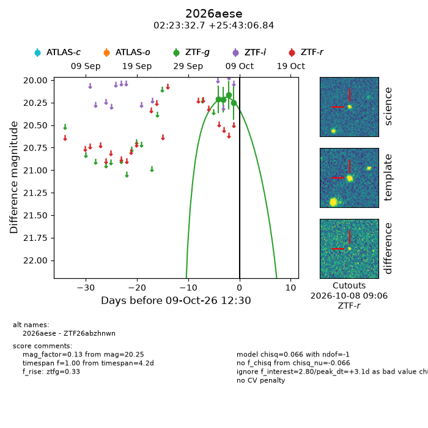
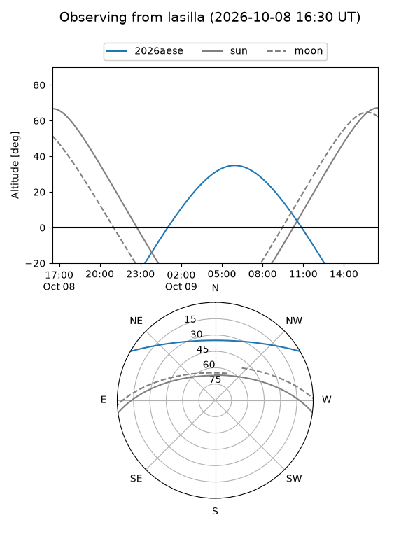
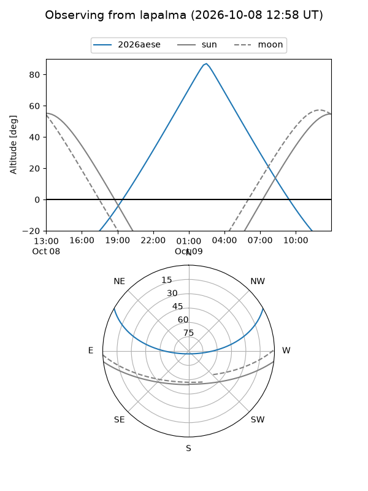
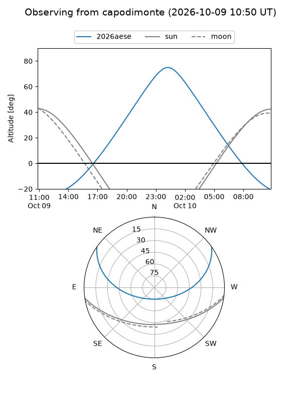
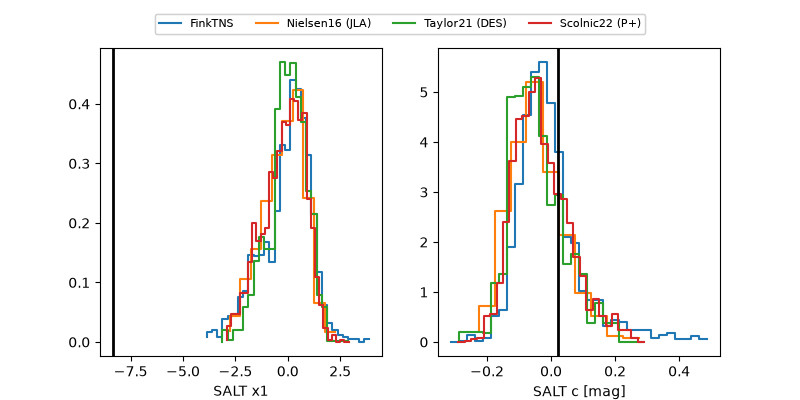

2026aese
Target 2026aese at 2026-10-09 12:32
Aliases and brokers:
FINK-ZTF: ztf.fink-portal.org/ZTF26abzhnwn
Lasair-ZTF: lasair-ztf.lsst.ac.uk/objects/ZTF26abzhnwn
ALeRCE-ZTF: alerce.online/object/ZTF26abzhnwn
YSE-PZ: ziggy.ucolick.org/yse/transient_detail/2026aese
TNS name: wis-tns.org/object/2026aese
Direct TNS query: direct search
alt names
ZTF26abzhnwn (ztf,fink_ztf)
2026aese (tns,yse)
Coordinates:
equatorial (ra, dec) = 35.8861,+25.71857
equatorial (HMS+DMS) = 02:23:32.66,+25:43:06.84
galactic (l, b) = (147.6860,-32.68783)
Flags:
peak dt: +3.1
Photometry:
last ztfg=20.25
4 ztfg detections
Lightcurve

Visibility



Additional plots
